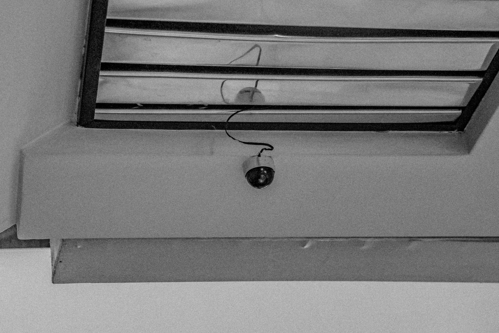

The images below are of CCTV cameras located around different places, which are relatively close to each other, in Wellington City. A CCTV camera, or 'closed-circuit television', is a TV system. Its purpose is not to be publicly distributed, but to monitor primarily for security and surveillance purposes.
Surveillance in Wellington
CCTV cameras would usually be found around homes or shop areas.In Wellington Central there are a wide range of CCTV cameras around the city which are a Council-led initiative. It is strongly supported through their partnership witht the Wellington Central Police. Camera base volunteers monitor the footage seven days a week at the Wellington Central Police station. Footage does not get released to the public, for privacy purposes.
Who has access?
CCTV cameras would usually be found around homes or shop areas.In Wellington Central there are a wide range of CCTV cameras around the city which are a Council-led initiative. It is strongly supported through their partnership witht the Wellington Central Police. Camera base volunteers monitor the footage seven days a week at the Wellington Central Police station. Footage does not get released to the public, for privacy purposes.
Where does the data and recorded footage go?
All the data recorded is observed by the volunteers at the camera base. The information is only used to help make evidence-based decisions within Council for city safety and urban design purposes. The collection of personal information is for the purposes of crime prevention, criminal evidence and personal well-being only. So it is safe to say that CCTV camera footage in Wellington does not get blasted onto the internet but there are still surveillance footage that does get put on the internet. In some cases, police pages on facebook, as I have seen, have posted security footage of robberies or assaults to help find the culprits.
This first CCTV camera is a camera outside a hostel located on the Terrace in Central Wellington. The hostels in Wellington only want to ensure the best security protection of their residents by providing surveillance just in case some minor, or major, mishaps take place.
Camera Two
A second CCTV camera which is not so hidden as it has a sign to warn people. This is inside the same hostel as the first camera but looks different. It's placed right in front of the after-hours door so it's only fair to say that it is keeping a close watch on who enters and exits the premises.
Camera Three
A more tiny camera located in the same hostel as the first and second cameras. Much more smaller and it's placement is in right in front of the main office. A nice, quiet place to put it to keep watch on the office in the case of any burglaries.

Camera Four
A camera I saw as I got off an elevator down Lambton Quay. This was right outside a dairy in a small enclosed area. It makes sense that a camera was put here to watch out for any thieves.
Camera Five
A surveillance camera outside a large apartment building down the Terrace. There are a lot of cars and carparks in this area and the camera's placement and focus must be on the cars that come and go as well as the residents and their safety.
Camera Six
Outside another hostel in Wellington. Clearly obvious that it is there as it is not hidden at all.